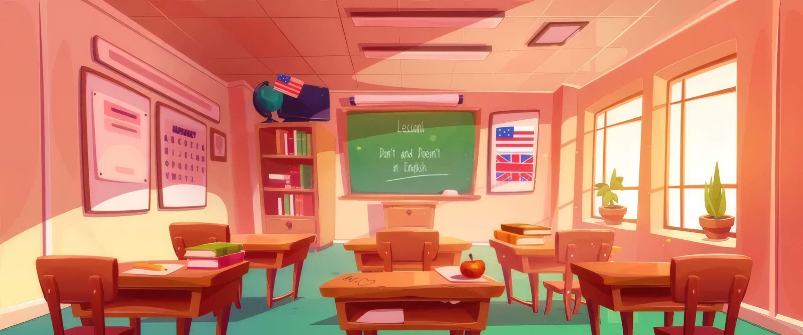

Never underestimate the psychological impact of the building itself. The physical environment—lighting, cleanliness, temperature, and the presence of green spaces—sends a silent message to students about how much they are valued. A decaying, dark, or dirty school can induce feelings of neglect and lethargy, killing the desire to attend. Conversely, a bright, well-maintained, and aesthetically pleasing environment acts as a mood booster, increasing alertness and reducing fatigue. When students take pride in their physical surroundings, they treat the school with respect and feel more energized to tackle their coursework. A welcoming space invites students in, making the act of going to school a pleasant experience rather than a chore.